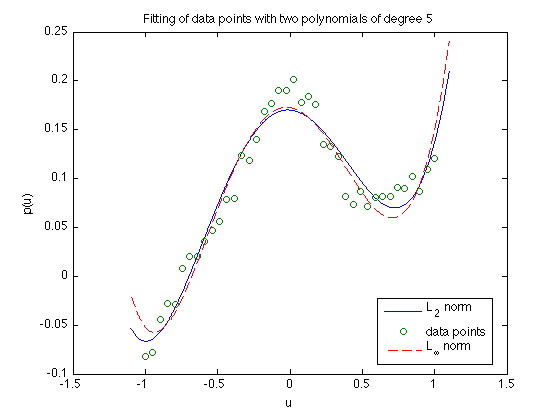

Figure 6.19: Polynomial fitting
n=6;
m=40;
randn('state',0);
u = linspace(-1,1,m);
v = 1./(5+40*u.^2) + 0.1*u.^3 + 0.01*randn(1,m);
fprintf(1,'Computing optimal polynomial in the case of L2-norm...');
A = vander(u');
A = A(:,m-n+[1:n]);
x = A\(v');
fprintf(1,'Done! \n');
fprintf(1,'Computing optimal polynomial in the case of Linfty-norm...');
cvx_begin quiet
variable x1(n)
minimize (norm(A*x1 - v', inf))
cvx_end
fprintf(1,'Done! \n');
u2 = linspace(-1.1,1.1,1000);
vpol = x(1)*ones(1,1000);
vpoll1 = x1(1)*ones(1,1000);
for i = 2:n
vpol = vpol.*u2 + x(i);
vpoll1 = vpoll1.*u2 + x1(i);
end;
figure
plot(u2, vpol,'-', u, v, 'o', u2, vpoll1,'--');
xlabel('u');
ylabel('p(u)');
title('Fitting of data points with two polynomials of degree 5');
legend('L_2 norm','data points','L_{\infty} norm', 'Location','Best');
Computing optimal polynomial in the case of L2-norm...Done!
Computing optimal polynomial in the case of Linfty-norm...Done!
